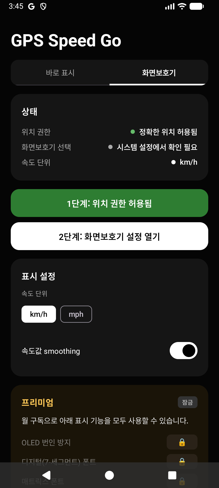

Android · iPhone
GPS Speed Go
현재 속도를 크게 보여주는, 인터넷 연결 없이도 사용할 수 있는 GPS 속도계입니다.



큰 숫자로 읽는 현재 속도
운전·자전거·달리기처럼 현재 속도를 빠르게 확인해야 할 때, GPS Speed Go는 화면 전체에 읽기 쉬운 숫자를 보여주는 속도계입니다.
속도계와 화면 보호기 모드
GPS 신호를 바탕으로 km/h 또는 mph 속도를 표시하고, 세로·가로 화면과 큰 숫자 중심의 전체 화면을 지원합니다.
- 실시간 GPS 속도(km/h·mph)
- 큰 숫자와 전체 화면 표시
- 세로·가로 화면 및 부드러운 회전
- GPS 신호 상태 표시
- 충전·거치 중 화면 보호기 모드
- 저속 자동 시계 전환
인터넷 연결이나 회원가입 없이 GPS만으로 작동합니다. Android 설명에서는 위치 정보가 기기에만 저장되고 외부로 전송되지 않는다고 안내하며, 정확한 속도 측정에는 위치 권한이 필요하고 야외에서 정확도가 높습니다.
이동 중 사용할 때 알아둘 점
차량 대시보드의 작은 숫자가 불편한 운전자, 거치대에서 큰 속도를 보고 싶은 자전거·오토바이 이용자, 달리기나 걷기 중 페이스를 확인하는 사용자에게 잘 맞습니다.